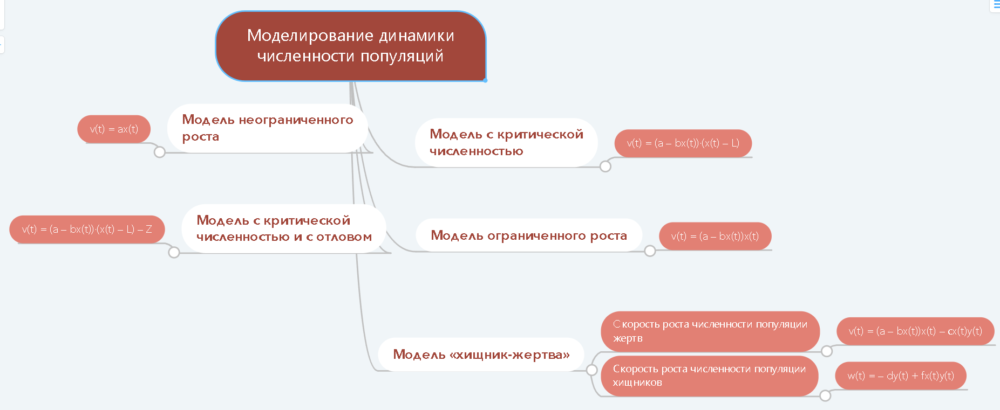

Модель – объект или процесс, который для различных целей рассматривается вместо другого объекта или процесса. На данный момент широко распространены компьютерные модели, представляющие собой информационную модель в виде файла на компьютерном носителе и ее изображение на экране компьютера.
Создание и использование моделей для решения научных и практических задач называется моделированием.

В современном моделировании реализуется системных подход, состоящий в том, что моделируемый объект представляется в модели как система, т.е. совокупности объектов. Элементы системы могут быть естественными (существующие и просто выделяемые) и искусственными объектами (несуществующие условные единицы).
Математическая модель системы называется динамической, если она учитывает изменение времени.

Метод Монте-Карло, названный в честь одного из самых знаменитых казино мира, основан на использовании генератора случайных чисел. Также значения генераторов случайных чисел называют псевдослучайными числами, поскольку получены они были посредством строгих математических методов и, следовательно, они являются предсказуемыми.
На языке PascalABC генератор случайных чисел реализован в стандартной функции random().
В электронных таблицах MS Excel генератор случайных чисел реализован в функциях СЛЧИС() и СЛУЧМЕЖДУ().
Рассмотреть метод Монте-Карло на примере задачи определения площади некоторой плоской фигуры.
Пусть имеется плоская фигура, которая находится внутри прямоугольника (будем называть его базовым) с известной площадью S. Засыпем мысленно прямоугольник тончайшем слоем песка. Если подсчитать общее число песчинок n и число k тех песчинок, которые попали на фигуру, то приближенно площадь фигуры можно считать по формуле C = S * k : n, где С – площадь фигуры.
Таким образом метод Монте-Карло освобождает нас от необходимости самим разбрасывать и подсчитывать песчинки.
Для описания динамики численности популяций ученые используют несколько математических моделей. Для двух популяций используются модели взаимодействия двух видов. Среди них модель «хищник-жертва», модель конкуренции двух видов за ресурсы питания, модели взаимовыгодного взаимодействия (симбиоза).
- a — коэффициент естественного прироста (a > 0)
- b — коэффициент смертности жертв от внутривидовой конкуренции (b > 0)
- c — коэффициент смертности жертв от хищников (c > 0)
- d — коэффициент смертности хищников (d > 0)
- f — коэффициент, определяющий прирост численности хищников (f > 0)
- L — критическая популяция
- Z — количество отловленных особей